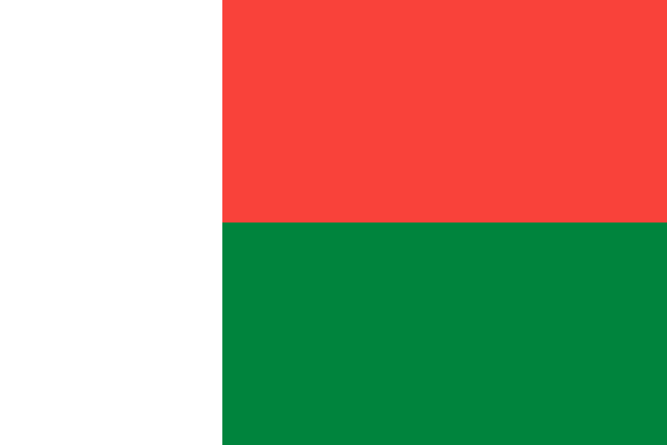

Madagascar é um país insular localizado no Oceano Índico, na costa sudeste da África. É a quarta maior ilha do mundo e possui uma fauna e flora extremamente ricas, com milhares de espécies que não existem em nenhum outro lugar do planeta.
